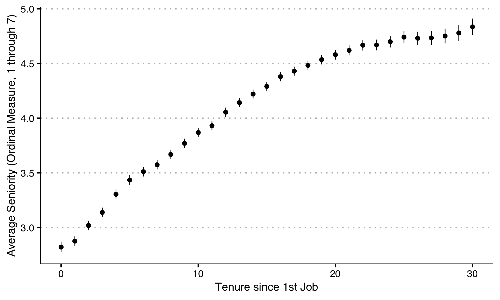
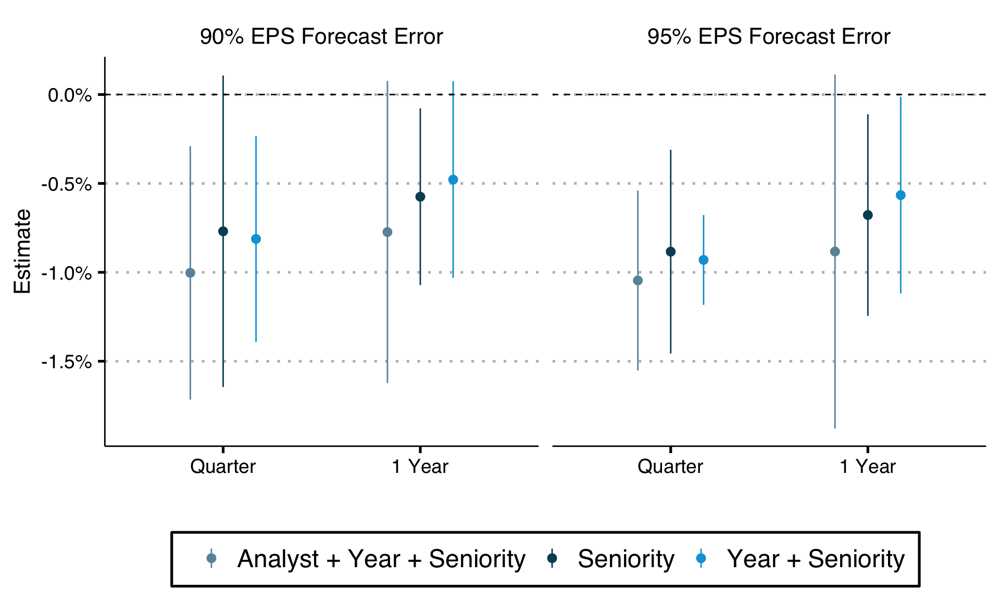
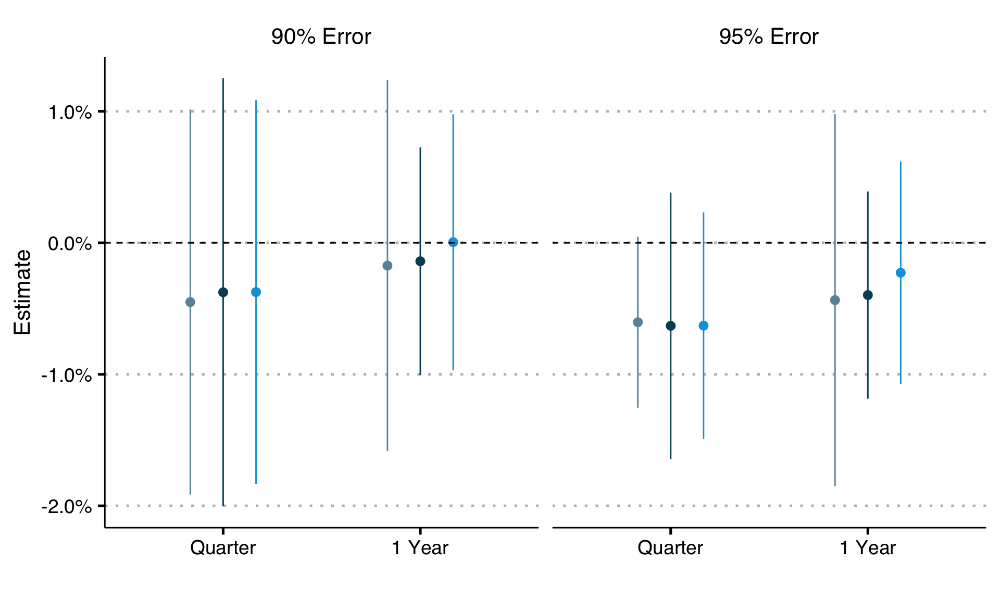
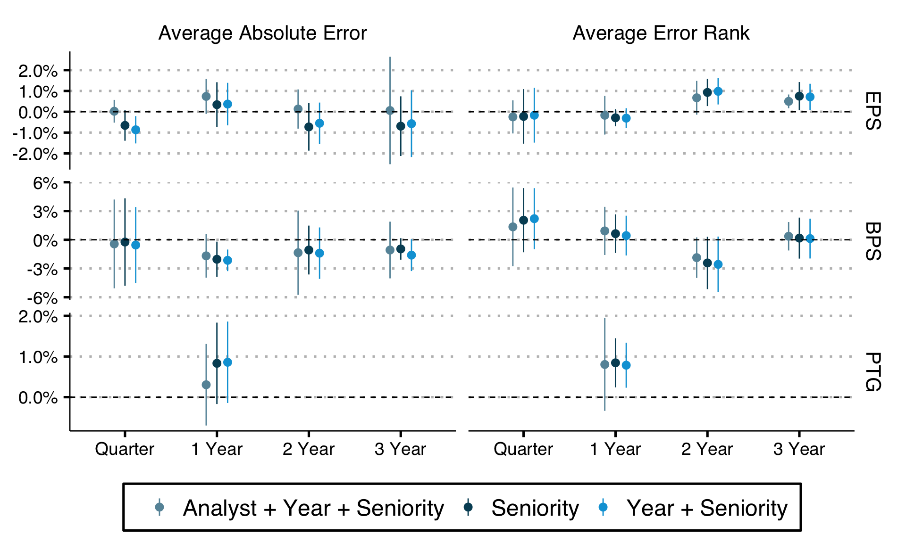
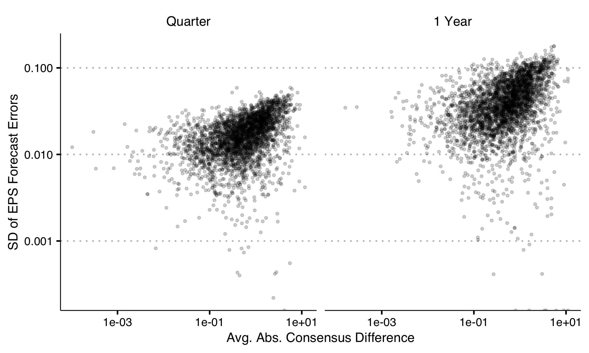

Analyst Incentives
Motivating Questions
- What incentives do analysts face?
- How do those incentives shape analyst forecasts?
- When we account for those incentives, what does that tell us about whether forecasters are rational?
Analyst Incentives
In this talk, I’ll focus in on the first question:
Build new dataset of analyst promotions / demotions / exit
Analyze relationship of these variables to standard measures of skill and herding
Develop novel causal framework for identifying counterfactual distributions of mistakes
Apply this framework to provide plausible causal estimates relating the distribution of forecast errors to promotions
Analyst Incentives: Results Summary
Effects of average forecasting skill on promotion, demotion, and exit are near zero
Deviation away from consensus is associated with lower promotion probability, holding skill constant
Good forecasts tend to be close to consensus
Distributional causal estimates reveal that the error distributions associated with promotion differ only in the tails
Why does this matter?
Macroeconomics: understanding their incentives allows us to better understand important forecasts
Organizational Economics: valuable lab to test theories of incentives (e.g. career concerns, herding)
Accounting / Corporate Finance: analyst / manager interactions can distort firm-level investment decisions and market forecasts
Asset pricing: news about cashflows and cashflow expectations is core to asset pricing
Literature
- Analyst incentives and reported forecasts. Examples: Welch (2000); Hong, Kubik, and Solomon (2000); Hong and Kubik(2003); Lamont (2004)
Contribution: better data, causal evidence
- Non-linear causal inference, dosage response curves. Examples: Athey & Imbens (2006); Chernozhukov and Hansen (2005); Callaway and Li (2019)
Contribution: a framework for distributional counterfactuals for treatments rather than outcomes
Data
- Forecasts: IBES forecasts with names (obtained via the price targets file)
- Outcomes: LinkedIn promotion and exit information for ~1,400 analysts
Building the Data
- Get names from the I/B/E/S price targets file (last name, first initial)
- Merge those names with CapitalIQ People Intelligence on last name, first initial
- Process these names by hand, removing duplicates and false positives
- Use their CapitalIQ identified employer’s information and their names to merge to Revelio’s LinkedIn database
- Collapse into an annual panel
Building the Outcomes
Revelio provides the “seniority” of a position:
- Entry Level (Ex. Accounting Intern; Paralegal)
- Junior Level (Ex. Acct. Receivable Bookkeeper; Legal Adviser)
- Associate Level (Ex. Senior Tax Accountant; Attorney)
- Manager Level (Ex. Account Manager; Lead Lawyer)
- Director Level (Ex. Chief of Accountants; Head of Legal)
- Executive Level (Ex. Managing Director, Treasury; Attorney, Partner)
- Senior Executive Level (Ex. CFO; COO; CEO)
Understanding Seniority
Defining Promotion
Promotion is defined as a positive year over year change in seniority. Denote promotion for analyst \(a\) in year \(t\) as
\[Y^{\text{1yr}}_{a, t} = \mathbb{1}(S_{a,t} - S_{a, t-1} > 0)\]
\[Y^{\text{3yr}}_{a, t} = \mathbb{1}\left(\sum_{s=0}^2 Y^{\text{1yr}}_{a, t + s} > 0\right)\]
I define one- and three-year demotion analogously.
Understanding Promotion
Building the forecasting panel
I consider several outcomes:
- price targets
- earnings per share
- dividend per share
- book value per share
- free cashflow
I also consider horizons from one quarter through 5 years away from realization where available.
Building the forecasting panel
- Following Diether, Malloy, and Scherbina (2002) I use the unadjusted I/B/E/S forecast files
- Compute forecast errors, then adjust for corporate actions adjustments myself
- Per-share variables are normalized by price, following De Silva and Thesmar (2024) and Van Binsbergen, Han, and Lopez-Lira (2023)
- All variables are winsorized at the 5% level
Measuring average skill
Let \(a\) index analyst, \(t\) index year, \(q\) index quantity (e.g. EPS, DPS), \(h\) index horizon, and \(j\) index stock. Then
\[|e_{a,t,q,h,j}| = |f_{a,t,q,h,j} - a_{a,t,q,h,j}|\]
where \(f\) is the forecast and \(a\) is the actual. The error rank for the stock is
\[r_{i,t,q,h,j} = 1 - \frac{\text{rank}(|e_{i,t,q,h,j}|) - 1}{N_{t,q,h,j} - 1}\]
where \(N_{t,q,h,j}\) is the number of forecasts available for the time period, quantity, horizon, and stock.
Measuring average skill
The two measures of forecasting skill are:
\[|e_{a,t,q,h}| = \frac{1}{N_{a,t,q,h}} \sum_{j=1}^{N_{a,t,q,h}} |e_{a,t,q,h,j}|\]
and
\[|r_{a,t,q,h}| = \frac{1}{N_{a,t,q,h}} \sum_{j=1}^{N_{a,t,q,h}} |r_{a,t,q,h,j}|\]
Measuring consensus differences
Let \(m_{s,q,h,j}\) be the mean consensus forecast on day \(s\) for quantity \(q\) at horizon \(h\) for stock \(j\). The analyst on that same day makes a forecast, \(f_{s,q,h,j}\). The leave-one-out mean is computed as
\[m^{loo}_{i,s,q,h,j} = \frac{N_{s,q,h,j} \times m_{s,q,h,j} - f_{s,q,h,i}}{N - 1}\]
Measuring consensus differences
Deviation from consensus is measured as
\[c_{i,t,q,h} = \frac{1}{N_{i,s,q,h,j}} \sum_{j=1}^{N_{i,s,q,h,j}} |f_{s,q,h,j} - m^{loo}_{i,s,q,h,j}| \]
Regression Framework
Let \(s\) be a measure of skill (abs. errors or rank) and \(c\) be consensus deviation. \(Y_{i,t+1}\) is an indicator for promotion.
\[Y_{i,t+1} = \beta_1 s_{i,t,h,q} + \beta_2 c_{i,t,h,q} + Z_{i,t} + F_{i,t} + \epsilon_{i,t}\]
\(Z\) is a vector of controls, including the market cap of the analyst coverage at \(t-1\), the tenure of the analyst at time \(t\), and the average # of analysts covering their stocks.
\(F_{it}\) is a battery of fixed effects: I consider seniority, year, and analyst fixed effects.
Regression Framework
Reputation may matter, so I also consider specifications with 3 lags of skill and deviation from consensus
\[ \begin{aligned} Y_{i,t+1} &= \beta_{1,t} s_{i,t,h,q} + \beta_{1,t-1} s_{i,t-1,h,q} + \beta_{1,t-2} s_{i,t-2,h,q} \\ & + \beta_{2,t} c_{i,t,h,q} + \beta_{2,t-1} c_{i,t-1,h,q} + \beta_{2,t-2} c_{i,t-2,h,q} \\ &+ Z_{i,t} + F_{i,t} + \epsilon_{i,t} \end{aligned} \]
Forecasting Skill Results: 1 Year
Forecasting Skill Results: 1 Year
Forecasting Skill Results: 3 Year
Forecasting Skill Results: 3 Year
Consensus Results: 1 Year
Consensus Results: 1 Year
Consensus Results: 3 Year
Consensus Results: 3 Year
Herding and skill are related

Estimating Potential Treatments
Binary outcome, \(Y_{a,t} \in \{0, 1\}\)
Continuous set of treatments \(e_{a,t} = \{e_{a,j,t}\}\), \(e_{a,j,t} \in \mathbb{R}\)
Two periods, \(t \in {0, 1}\)
Sets of potential treatments are \(e_{a, t}^y = \{e_{a, t} : \mathbb{1}(G(e_{a,t}) > 0) = y\}\) for \(y \in \{0,1\}\)
We want to identify the distributions of errors \(e^y_{a,t}\)
Potential Treatments: Estimator
My estimator for each counterfactual follows Athey and Imbens (2006). Assumptions:
- Analysts have a single index unobservable, \(U_a\) that differs across people
- Errors are produced by a production function \(h(U, T)\) which is strictly increasing in \(U\)
- Unobservables are independent of time given analyst: \(U \perp T\ |\ A, O\), where \(O\) indexes observables
- Common support for unobservables across time
Potential Treatment: Estimator
Let \(h^y \in H^y_{a,t}\) be a production function in the set of possible production functions such that \(h^y(u_a, t) \in e_{a, t}^y\).
The model assumes:
- If \(h^0(u_a, 0) \in H^0_{a, 0}\) then \(h^0(u_a, 1) \in H^0_{a, 1}\): this restricts the support of the set of unpromotable production functions
- For a pair of analysts, \(a, b\), if \(h^0_a(u_a, 0) \in H^0_{a, 0}\) & \(h^0_b(u_b, 0) \in H^0_{b, 0}\), then \(h^0_a(u_a, 0) = h^0_b(u_a, 0)\): this says that for each pair of analysts, both would have the same errors given the same unobservable
- When analyst \(a\) is promoted, errors \(e_{a,j,1} = h^1_a(u_a, 1)\)
Constructing Counterfactuals
Let \(F^1_{e, a, 1}\) be the CDF of forecast errors for the promoted analyst at time \(1\) and \(F^0_{a, 1}\) be a counterfactual distribution of forecast errors such that the same analyst would not be promoted. By theorem 3.1 of Athey and Imbens (2006) we can identify \(F^0_{a,1}\):
\[F^0_{e, a, 1} = F_{e, a, 0}(F^{-1}_{e,b,0}(F_{e,b,1}(e)))\]
where \(F^{-1}(e)\) is the inverse CDF. For each analyst / time pair, I estimate these functions with empirical CDFs.
Constructing Counterfactuals
This gives us a set, \(\{\hat{F}^0_{e, a,1}\}\) which we can compare, for each analyst, to \(\hat{F}^1_{e,a,1}\) in the years where the analyst is promoted. Denote \(\hat{F}^0_{a,t|b} \in \{\hat{F}^0_{e, a,1}\}\) the counterfactual distribution drawn from analyst \(b\), and let
\[\hat{Q}_{a,t|b}(q) = (\hat{F}_{a,t}^1)^{-1}(q) - (\hat{F}_{a,t|b}^0)^{-1}(q)\]
be the difference in quantile \(q\) for the distributions under which analyst \(a\) is promoted compared to the counterfactual drawn from analyst \(b\).
Constructing Counterfactuals
The average difference in error quantile for the promoted analysts at quantile \(q\), \(Q^1(q) = E(Q_{a,t}(q) | Y_{a,t} = 1)\), where
\[Q_{a,t}(q) = E(Q_{a,t|b}(q)) = E((F_{a,t}^1)^{-1}(q) - (F_{a,t|b}^0)^{-1}(q))\]
which I estimate1 with
\[\hat{Q}_{a,t}(q) = \frac{1}{N_{B_{a,t}}} \sum_{b = 1}^{B_{a,t}} (\hat{F}_{a,t}^1)^{-1}(q) - (\hat{F}_{a,t|b}^0)^{-1}(q))\]
Constructing Counterfactuals
I estimate the analogue to the expected quantile “dosage” effect on the treated, \(Q^1(q)\) as
\[\hat{Q}^1(q) = \frac{1}{N_{A}} \sum_{a=1}^A \hat{Q}_{a,t}(q)\]
Inference is done via the empirical bootstrap when sampling for \(\hat{F}^0_{a,t|b}\) and the weighted bootstrap when estimating \(\hat{F^y}_{a,t}\). The method is implemented in the R package cicreverse, available at github.com/be-green/cicreverse.
Constructing Counterfactuals
Empirically I consider counterfactuals who are:
- Other analysts matched on pre-promotion seniority
- in periods 1-3 years prior to the promotion-associated year
Outcomes are absolute forecast errors as the measure of \(e_{a,t}\) because of the monotonicity condition on \(h^y_{a,t}\)1
Causal Estimates
EPS Forecast Errors and Industry Exit

Conclusion
- Using a new dataset combining forecasts with promotions and demotions from LinkedIn, I study incentive structures facing equity analysts
- I find no average effect of forecasting skill on promotion probability
- I develop an approach to counterfactual causal inference focused on treatments in a case of binary outcomes
- Using this method, I find that tails do seem to differ, but nothing else does